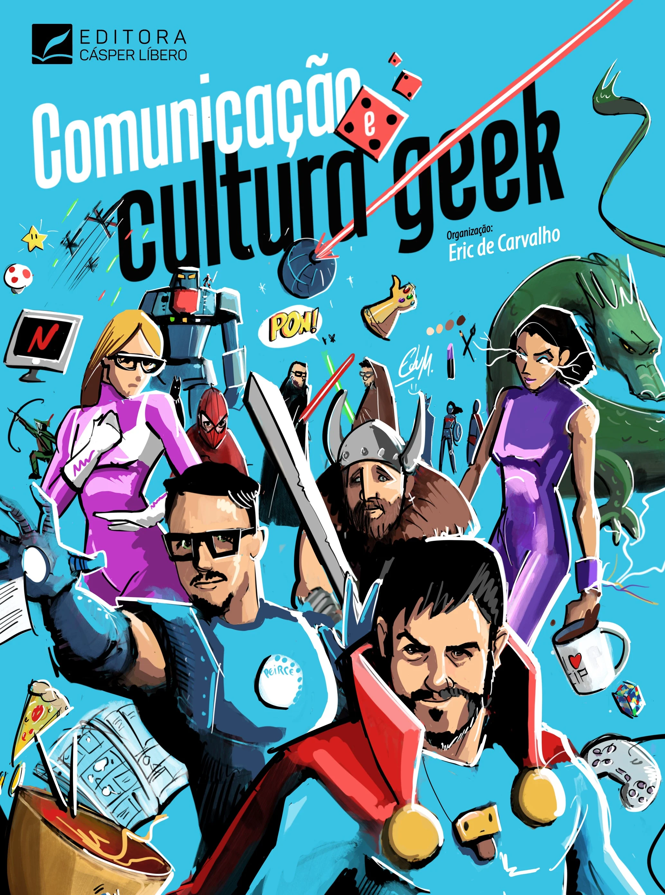
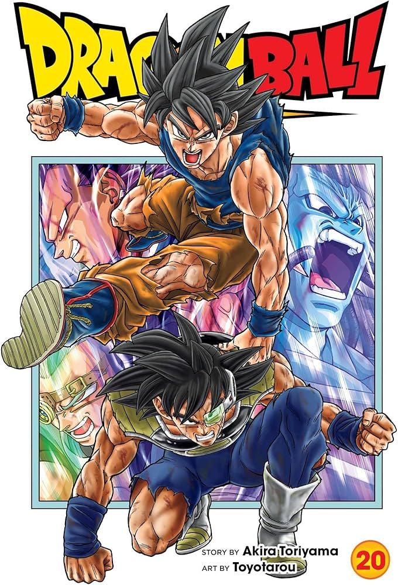

Livros da cultura Geek
Sobre os livros,da cultura geek

Antes das telas brilhantes e dos efeitos especiais, a cultura geek
floresceu nas páginas de livros, construindo universos ricos e
personagens inesquecíveis que cativaram gerações. Os livros são a
espinha dorsal de muitos dos pilares da cultura geek, oferecendo a
profundidade narrativa, a complexidade dos mundos e a intimidade com os
personagens que muitas vezes inspiram adaptações para outras mídias.
Mergulhar nesses mundos de papel e tinta é adentrar a própria essência
da imaginação geek. A fantasia épica, com suas jornadas heroicas, magias
ancestrais e a eterna luta entre o bem e o mal, é um dos pilares
literários da cultura geek. Obras como "O Senhor dos Anéis" de J.R.R.
Tolkien não apenas definiram o gênero, mas também criaram um universo
incrivelmente detalhado que continua a influenciar a literatura, o
cinema e os jogos até hoje. As crônicas de "As Crônicas de Gelo e Fogo"
de George R.R. Martin, com sua intriga política e personagens moralmente
ambíguos, demonstram a evolução e a sofisticação do gênero. A ficção
científica, com sua exploração do futuro, da tecnologia e do lugar da
humanidade no cosmos, também possui uma vasta e influente tradição
literária geek. Clássicos como "Duna" de Frank Herbert, com sua complexa
ecologia e política interplanetária, "Neuromancer" de William Gibson,
que pavimentou o caminho para o cyberpunk, e as obras visionárias de
Isaac Asimov e Arthur C. Clarke continuam a inspirar debates e a moldar
nossa visão do futuro. Os livros também são a fonte primária de muitos
dos nossos amados super-heróis. Antes dos quadrinhos dominarem as
bancas, personagens como Sherlock Holmes, com suas habilidades dedutivas
quase sobre-humanas, e os heróis pulp como O Sombra e Doc Savage
pavimentaram o caminho para os vigilantes mascarados que conhecemos
hoje. Embora os quadrinhos tenham sua própria rica história, muitos
arcos narrativos e mitologias de super-heróis têm suas raízes em
histórias mais longas e detalhadas encontradas em livros e novelas
gráficas mais extensas. A literatura young adult também desempenha um
papel significativo na cultura geek contemporânea. Séries como "Harry
Potter" de J.K. Rowling, com seu mundo mágico acessível e personagens
cativantes, e "Jogos Vorazes" de Suzanne Collins, com sua distopia
instigante, conquistaram uma legião de fãs e demonstraram o poder da
literatura em conectar jovens leitores com temas importantes e universos
imaginativos. O que torna esses livros tão importantes para a cultura
geek? Em primeiro lugar, eles oferecem uma profundidade e um nível de
detalhe que muitas vezes não são possíveis em outras mídias. Os leitores
têm a oportunidade de mergulhar nos pensamentos e motivações dos
personagens, de explorar a complexidade dos mundos criados pelos autores
e de construir suas próprias imagens mentais das histórias. Além disso,
os livros da cultura geek fomentam a imaginação e a criatividade. Ao nos
apresentar a mundos e conceitos além da nossa realidade cotidiana, eles
nos inspiram a pensar de forma diferente, a questionar o status quo e a
sonhar com o impossível. As discussões e teorias geradas por esses
livros também fortalecem a comunidade geek, criando laços entre leitores
que compartilham a paixão por essas narrativas. Embora o cinema, os
jogos e outras mídias tenham um papel crucial na cultura geek, os livros
permanecem como a fonte primordial de muitas das histórias e ideias que
amamos. Eles são a base sobre a qual muitos outros aspectos da cultura
geek são construídos, oferecendo uma riqueza de detalhes e uma
profundidade narrativa que continua a encantar e inspirar gerações de
fãs. Seja revisitando um clássico amado ou descobrindo um novo mundo nas
páginas de um livro, a essência literária da cultura geek continua viva
e vibrante.

A série começa com um menino com rabo de macaco chamado Son Goku fazendo
amizade com uma adolescente chamada Bulma, que ele acompanha para
encontrar as sete Esferas do Dragão,[4] que convocam o dragão Shenlong
para conceder ao usuário um desejo. A jornada os leva ao ladrão do deserto
Yamcha, que mais tarde se torna um aliado; Chi-Chi, a quem Goku
inconscientemente concorda em se casar;[5] e Pilaf, um anão azul que
procura as esferas do dragão para cumprir seu desejo de dominar o mundo.
Goku então se submete a rigorosos treinamentos sob o mestre de artes
marciais Kame Sennin, a fim de lutar no Tenkaichi Budōkai (天下一武道会,
lit. “Torneio de Artes Marcial do Mais Forte Abaixo dos Céus”). Um monge
chamado Kuririn se torna seu parceiro de treinamento e rival, mas logo
eles se tornam melhores amigos.[5] Após o torneio, Goku procura a Esfera
do Dragão que seu avô o deixou e quase sozinho derrota o Exército da Red
Ribbon[5] e seu assassino contratado Tao Pai Pai. Depois disso, Goku se
reúne com seus amigos para derrotar os lutadores da vidente Vovó Uranai e
fazer com que ela localize a última Esfera do Dragão para reviver um amigo
morto por Tao Pai Pai.